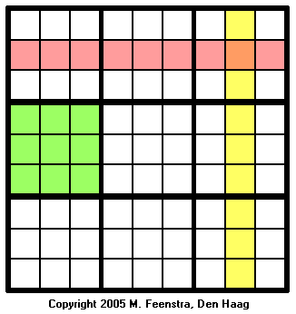

Sudoku Puzzle Rules
Solving a sudoku puzzle can be rather tricky, but the rules of the game are quite simple.
A sudoku puzzle is a grid of nine by nine squares or cells, that has been subdivided into nine subgrids or "regions" of three by three cells. See the following diagram: 
The objective of sudoku is to enter a digit from 1 through 9 in each cell, in such a way that:
- Each horizontal row (shown in pink) contains each digit exactly once
- Each vertical column (shown in yellow) contains each digit exactly once
- Each subgrid or region (shown in green) contains each digit exactly once
Instructions
You can either use the panel on the right to select a number, or the keyboard and numpad.
Use the left mouse button to place a number and again to erase it.
Use the right mouse button to place footnotes and again to erase them.
Copyright © 2005-2011 M. Feenstra, Den Haag Retrieved From: http://www.sudoku.ws/rules.htm